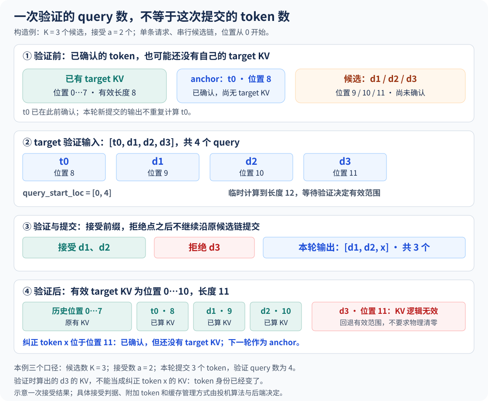
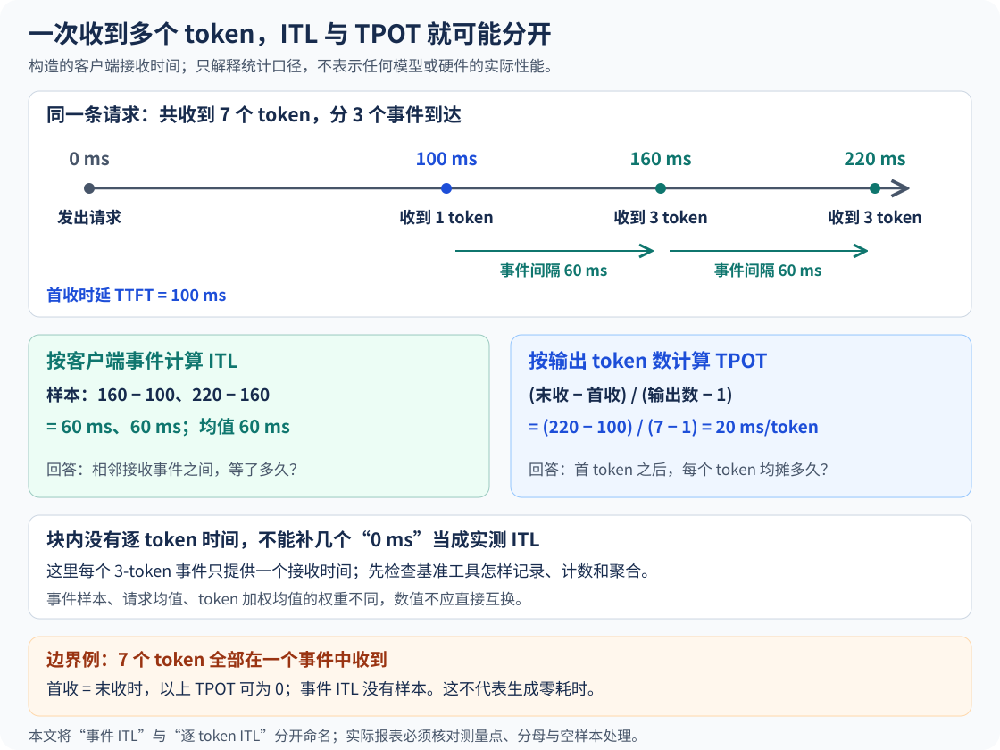

上一章把本轮 Token 打包成输入，再用 metadata 描述请求边界、位置和 KV 地址。现在把一个假设拿掉：Decode 不一定每条请求每轮只推进一个位置，也不一定每次只向客户端交付一个 Token。
投机解码正好从这里接上。它改变的不只是模型调用次数，还包括本轮 query 的形状、KV 的有效边界，以及我们观察输出节奏的方式。
本章用单链、因果 Attention 的构造例讲机制。手动选择接受结果是为了观察状态，不是接受概率模型。时间线同样是构造数据，不代表任何设备实测。树形候选、不同提议器、融合采样、EOS 和长度截断，需要按实际实现另查。
1. 先提议，再验证，不是提前确认答案
普通自回归解码先算出下一个 Token，再把它作为后续输入。投机解码先由较便宜的提议路径给出几个候选，再交给目标模型验证。提议路径可以来自草稿模型、预测头或其他方法，不必永远是一套独立的小模型。投机解码概览
先看贪心构造例。草稿提出 d1、d2、d3，目标模型确认前两个，却在第三个位置选择 x。本轮提交的是 [d1,d2,x]；不能保留已经拒绝的 d3，再跳着接受它后面的候选。后面的条件前缀已经改变。
若三个都接受，还可从目标模型最后一行预测再得到一个 bonus Token。记候选数为 K、连续接受数为 a，则这个简化流程通常提交 a+1 个新 Token；EOS、输出长度上限可能让提交提前结束。随机采样还需要正确的接受概率和拒绝后校正分布，不能用“两个模型选中了同一个词”替代完整算法。适当的投机采样算法可以保持目标采样分布，实际速度收益则要另测。经典算法与接受校正
2. 为什么三个候选可能对应四行 query？
沿用上一章的区别：一个已采样输出，可能还没有作为目标模型输入计算过自己的 KV。把最后这个已确认 Token 叫作 t0，它是本轮的 anchor。
构造已有目标 KV 覆盖位置 0～7，长度为 8；t0 位于位置 8，已经确认，但还没有目标 KV。提议三个候选以后，常见的带 KV 增量验证布局是：
目标已有 KV： [位置 0 … 7]
本轮输入： [ t0, d1, d2, d3 ]
positions： [ 8, 9, 10, 11 ]
query 长度： 4
query_start_loc：[ 0, 4 ]
暂时可计算长度： 12在因果关系下，t0 对应的输出分布验证 d1；d1 所在行验证 d2；d2 所在行验证 d3；全部接受时，d3 所在行的分布用于 bonus。多个位置可以在一次目标前向中计算，但每行仍只能看见自己的历史与候选前缀，不能看未来 Token。
K+1 是这个布局的结果，不是所有投机实现的定义。 有的方法组织树形候选，有的方法复用不同的中间状态，query 数、掩码与字段都可能不同。画图时先声明 anchor、候选和 KV 的边界，比记住一个固定长度更有用。输入和 Attention 元数据

3. metadata 要描述的是实际计算，不能只写“这是 D”
| 需要描述什么 | 普通逐 Token D | 本章验证构造例 |
|---|---|---|
| 每请求 query 长度 | 通常为 1 | anchor 与三个候选，共 4 |
| 请求边界 | 按各请求长度累加 | 同样累加，不能仍按每条 1 行处理 |
| 请求内位置 | 本轮一个新位置 | 位置 8、9、10、11 |
| KV 写入槽位 | 一个当前输入的槽位 | 四个临时计算位置各有槽位 |
| 可见上下文 | 历史与当前位置 | 历史与该行之前的候选前缀 |
| 采样对应关系 | 选取下一 Token 的分布 | 区分候选验证、拒绝校正和 bonus |
同一批里不同请求可以提议不同数量，也可能接受不同长度。验证前要准备能支撑实际 query 的边界、位置和地址；验证后还要把接受结果反馈给调度与下一轮输入状态。仅有一个“Decode 请求数”不能推出本轮 Token 总量，更不能推出下一轮 positions。目标执行与元数据准备
候选树还需要表达分支之间的可见性，不能把不同分支当成同一条普通连续前缀。本章先把单链走通，树形方法再沿这条边界扩展。
4. 提交了三个输出，为什么不等于新增三个输出的 KV？
现在取 a=2：接受 d1、d2，拒绝 d3，纠正 Token 为 x。
本轮已计算目标输入： t0@8、d1@9、d2@10、d3@11
有效目标 KV： 位置 0 … 10，长度 11
被拒绝的候选 KV： d3@11 不得作为正确历史继续读取
新提交输出： d1@9、d2@10、x@11
下一轮 anchor： x@11，尚未计算它自己的目标 KV这次前向计算过位置 11 的 d3，并不意味着位置 11 的 x 已有 KV。它们是不同 Token。下一轮应沿正确路径输入 x，而不能把 d3 的缓存误当成 x 的缓存。
在本例中，有效目标 KV 长度是 8+1+a，额外的 1 来自 t0。临时算过的总长度为 12，拒绝尾部有 3−a 个位置。这个记账能覆盖 a=0～3；全部接受时，bonus 同样尚未作为目标输入计算 KV。
回退首先是有效范围和访问关系的修正。 拒绝尾部可能被覆盖、屏蔽，完整块也可能归还；不必逐字节清零，更不能承诺每次拒绝都马上释放一整块。Lookahead 预留的是计算和容量条件，预留不等于提交。KV 块与缓存管理
一轮投机，哪些 token 真正留下来？
固定 K＝3。手选连续接受的候选数，看 Query、临时 KV 和最终输出怎样分开记账。
① Draft：先提出 3 个候选
已有 Target KV位置 0–7
本轮输入位置t0 已确认；d 是候选
新提交的输出不重复计算已输出的 t0
这是记账演示：手选 a 不表示接受概率；事件不等时，也不预测速度。x 刚被采样出来，尚未作为 Target 输入，不能算入已有 Target KV。
5. 回到调度预算和图执行
第一篇中的 D预算=N_D×1 限定普通单 Token D。启用投机后，要按本轮实际验证工作量及实现的调度记账检查预算；在本章布局中，一个请求的目标前向就包含 4 行。提议工作、目标验证工作、接受 Token 和对外输出 Token 是四种不同计数。
投机还会预留后续位置，增加 metadata、采样与 KV 管理工作。过长的候选并不免费：可能消耗更大 query 批次和缓存空间，最后只保留一个很短的接受前缀。容量压力还会影响其他请求的调度。
图执行同样要看实际形状。某些后端可以为统一的多 Token Decode query 使用捕获图，不能把 uniform decode 永久等同于每条只有 1 行；不同提议长度、padding、功能组合与后端限制又可能改变路径。接受结果还决定下一轮状态，不能用本轮回放成功推断后续永远命中。图执行与 batch 描述
6. 一次执行、一个输出事件、一个 Token，分开计时
这里讨论客户端观察点，先固定定义：
- TTFT：从请求发出到收到第一个有效内容输出事件的时间；它通常用作首 Token 的可观测时间。
- 输出事件间隔：相邻有效内容事件到达客户端的时间差。一些压测客户端把这些样本记为 ITL，即使一个事件含多个 Token。
- TPOT：常见逐请求计算为
(E2EL−TTFT)/(O−1)，O 为输出 Token 数，要求 O 大于 1；应同时核对 E2EL 的结束边界。
SSE 消息、解码文本片段和 tokenizer Token 不总是一一对应。一个事件里可能有多个 Token，也可能有不含内容的角色、统计或结束信息。必须先说清哪些事件计时、Token 数从哪里来，不能直接把事件数当输出长度。官方客户端延迟口径
为了把算术独立出来，构造请求从 0 ms 开始，忽略末尾控制信息的额外时间：
| 客户端收到内容的时刻 | 本次新 Token 数 | 累计输出 |
|---|---|---|
| 100 ms | 1 | 1 |
| 160 ms | 3 | 4 |
| 220 ms | 3 | 7 |
事件间隔是 [60,60] ms，均值 60 ms。TPOT 却是 (220−100)/(7−1)=20 ms/Token。两者分别在回答“多久看到一批新内容”和“首批之后的时间按输出 Token 摊下来多少”。

所以，投机解码以后 ITL 和 TPOT 更容易出现明显差异，但不必然随着投机长度增大而单调拉开。接受长度、发送策略、代理缓冲和测量实现都会改变关系。不能看到 TPOT 更小，就认定每次可见停顿都更短。
一次输出事件，未必只有一个 token
三个场景都输出 7 个 token。比较输出事件的间隔与整条请求的 TPOT。
这里的“ITL”特指客户端相邻输出事件的间隔。同一事件里多个 token 的内部时序不可观测，不能补几个 0 来冒充设备逐 token 时延。
还要留意首块：若第一块已有多个 token，它们的内部间隔也不可见。极端情况下，7 个 token 一块到达，按公式 TPOT 可为 0，却没有任何输出事件间隔样本；这不表示生成没有耗时。不同请求汇总时，间隔加权与请求加权也会产生差异。
7. 不要给同一块里的 Token 补零，再当成设备实测
如果把 160 ms 收到的三个 Token 都人为标为 160 ms，会得到两个零间隔。这只是给不可观测时间做了一种分配，不能恢复它们在设备上何时生成，也不能拿这个 P99 解释用户是否等了很久。
同样的目标执行，代理把三个逐次输出攒成一批再发，也会改变客户端间隔。网页交互中保留三种构造对照：逐 Token 发送、投机式成组返回、仅由代理攒批。第三种特意保持内部逐 Token 时间不变，让“执行变快”和“发送分组改变”分开观察。
首个内容事件若带多个 Token，首 Token 的真实生成时间也不可直接观察。若所有输出都挤在同一个事件，按简化客户端边界算出的 TPOT 甚至可为 0，同时没有任何事件间隔样本；这说明测量分辨率不足，不表示模型零耗时。
还有聚合权重：逐请求 TPOT 的均值通常每请求一票，所有 ITL 样本的均值则每间隔一票。即使普通逐 Token 返回，两者也未必相等。例如一个请求只有 1 个 100 ms 间隔，另一个有 10 个 10 ms 间隔：平均逐请求 TPOT 是 55 ms，合并所有间隔的均值约 18.18 ms。比较前先确认请求集和权重。
8. 什么时候可能更快，应该记录什么？
一次验证若提交 a+1 个新输出，其摊销成本可以先写成：
每提交 Token 的教学成本 ≈
（提议 + 目标验证 + 元数据/采样/状态维护等成本）÷（a+1）这只是服务需求的拆分，不是端到端时延等式；流水线与通信重叠、其他请求排队、EOS 和输出截断都可能改变结果。候选接受多也不自动保证更快：提议器可能太贵，目标已被大批量充分利用，或者验证、KV 和并行通信的额外成本抵消了收益。目标是比较固定负载和质量条件下的实际吞吐与时延，而不是单独追求接受率。
建议保留四条可对齐的记录：
- 执行：提议和验证的起止、实际 query 长度、padding 与图执行路径。
- 状态：候选数、连续接受数、实际提交数、有效 KV 长度及预留空间。
- 发送：服务端每次输出包含多少 Token，代理是否缓冲，客户端收到的时间。
- 指标：TTFT、逐请求 TPOT、输出事件间隔分布与最长可见停顿，并注明计算工具和聚合方式。
测试时把普通解码作为对照，固定模型、提示、输出长度约束、采样策略和负载，再改变投机设置。先核对结果与记账，再讨论性能。没有逐 Token 生成时间时，直接报告“客户端输出事件间隔”，比给它一个含糊的 Token 级解释更有用。
9. 留三个检查题
- K=3、a=2，本例目标 query 有几行，新提交几个输出，有效目标 KV 增长几个位置？为什么纠正 x 仍没有目标 KV？
- 看到客户端事件间隔 60 ms、TPOT 20 ms，能否判断其中一个指标算错？还需要哪些观测条件？
- 候选接受得更多，但 TPOT 没改善，下一步应分别查提议成本、验证批次、KV 压力和发送行为中的哪些证据？
对应答案都能在前面的账本和时间线上找到。读完这一章，再看一个请求的延迟，就应同时辨认调度轮、验证轮、提交 Token 和客户端输出事件。